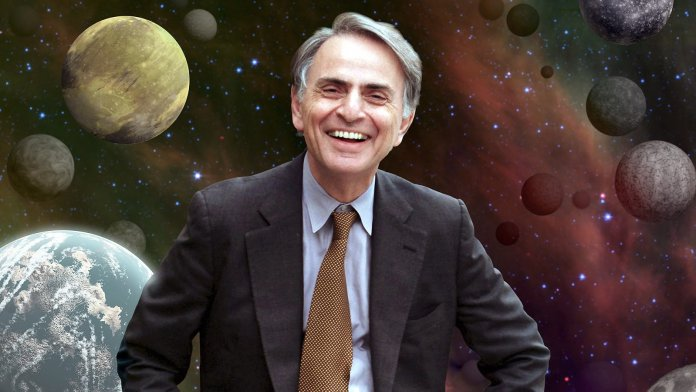

by Anthony
Postado em 1 de Janeiro, de 2019 às 12:00
Carl Edward Sagan (Nova Iorque, 9 de novembro de 1934 — Seattle, 20 de dezembro de 1996) foi um cientista, biólogo, astrônomo, astrofísico, cosmólogo, escritor e divulgador científico norte-americano. Sagan é autor de mais de 600 publicações científicas, e também autor de mais de 20 livros de ciência e ficção científica. Foi durante a vida um grande defensor do ceticismo e do uso do método científico. Promoveu a busca por inteligência extraterrestre através do projeto SETI e instituiu o envio de mensagens a bordo de sondas espaciais, destinadas a informar possíveis civilizações extraterrestres sobre a existência humana.
Mediante suas observações da atmosfera de Vênus, foi um dos primeiros cientistas a estudar o efeito estufa em escala planetária. Também fundou a organização não-governamental Sociedade Planetária e foi pioneiro no ramo da exobiologia. Sagan passou grande parte da carreira como professor da Universidade Cornell, onde foi diretor do laboratório de estudos planetários. Em 1960 obteve o título de doutor pela Universidade de Chicago. Sagan é conhecido por seus livros de divulgação científica e pela premiada série televisiva de 1980 Cosmos: Uma Viagem Pessoal, que ele mesmo narrou e co-escreveu. O livro Cosmos foi publicado para complementar a série. Sagan escreveu o romance Contact, que serviu de base para um filme homônimo de 1997.
Morreu aos 62 anos, de pneumonia, depois de uma batalha de dois anos com uma rara e grave doença na medula óssea (mielodisplasia). Ao longo de sua vida, recebeu vários prêmios e condecorações pelo seu trabalho de divulgação científica. Em 1978, ganhou o Prémio Pulitzer de Não Ficção Geral pelo seu livro The Dragons of Eden. Sagan é considerado um dos divulgadores científicos mais carismáticos e influentes da história, graças a sua capacidade de transmitir as ideias científicas e os aspectos culturais ao público não especializado. Segundo o biógrafo Keay Davidson, a personalidade de Sagan foi o resultado de suas estreitas relações com ambos os pais, que eram às vezes opostos um do outro.
Entretanto, o seu "sentimento de admiração" veio de seu pai, que quieto e sorrateiramente escapou do Czar. Em seu tempo livre, este dava maçãs aos pobres, ou ajudava a suavizar as tensões entre patrões e operários na tumultuada indústria têxtil de Nova Iorque. Ainda que intimidado pelo brilhantismo de Carl, por suas infantis perguntas sobre estrelas e dinossauros, Sam ajudou a transformar a curiosidade de seu filho em parte de sua educação. Em seus últimos anos como cientista e escritor, Sagan frequentemente desenhava sobre suas memórias de infância para ilustrar questões científicas, como fez em seu livro Sombras dos Antepassados Esquecidos.
Se não existe vida fora da terra, então o universo é um grande desperdício de espaço.